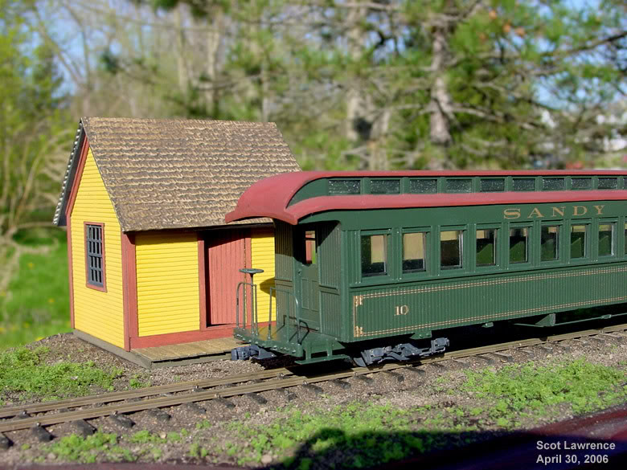
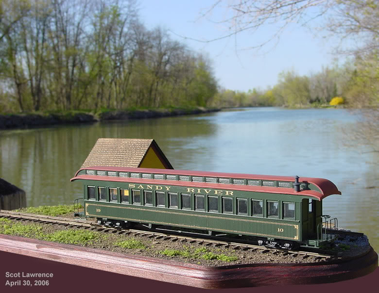

Kitbashing a Sandy River
& Rangeley Lakes On2 scale coach
from two Bachmann On30 coaches.
Page 5. Finished!!
Kitbashing a Sandy River
& Rangeley Lakes On2 scale coach
from two Bachmann On30 coaches.
Page 5. Finished!!
| Update,
May 1st, 2006
4 months
later, the coach is finished! It was actually finished a few weeks ago, but I wanted to build a small display module to use to photograph the finished coach, so that took a few weeks. For
the display module, I bought a wood plaque at Michael's crafts (a local
craft store), cut the 2-foot gauge ties from 3/32" square bass wood, cut
to 1.25" lengths, which scales out to the 5"X5"X5' ties of the prototype.
I bought a piece of code 83 HO flextrack for the rail, ripped the rail
from the HO ties, and spiked it down.
Well,
thats about everything..on to the finished pictures!


Thats
it!
Next
up..regauging the upcoming Bachman On30 Maine Forneys to On2!
|